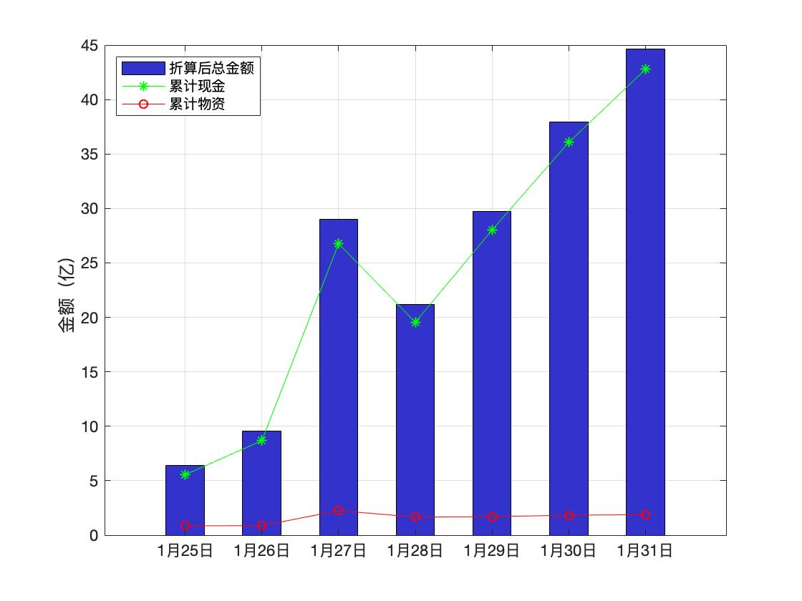

本站旨在收集湖北/武汉红十字的相关公示信息，集中展示，为大家做参考。同时我们对舆论节点做一个时间轴整理。
湖北省红十字会累计捐赠曲线图

注：为什么27号这么高？这还是累计数据吗？笔者作为数据搬运工无法解释，读者可参考下表链接自行考证。
湖北省红十字会累计捐赠情况
| 编号 | 日期 | 累计捐款 万元 | 累计物资 万元 | 合计 万元 | 链接 |
|---|---|---|---|---|---|
| 7 | 31-Jan | 42767.3 | 1876.2 | 44643.5 | link |
| 6 | 30-Jan | 36069.3 | 1836.2 | 37905.5 | link |
| 5 | 29-Jan | 28017.1 | 1699.5 | 29716.6 | link |
| 4 | 28-Jan | 19549.8 | 1663.5 | 21213.3 | link |
| 3 | 27-Jan | 26764.5 | 2248.7 | 29013.1 | link |
| 2 | 26-Jan | 8673.8 | 875.4 | 9549.2 | link |
| 1 | 25-Jan | 5541.4 | 856.3 | 6397.7 | link |
1月30日公布物资使用情况
| 捐赠方 | 物资 | 折算金额(万元) | 流向 | 链接 |
|---|---|---|---|---|
| 河北以岭药业有限公司 | 莲花清瘟胶囊（24粒装）13.5万盒 | 500.00 | 省疾控中心 | link |
| 上海宇昂科技王宇董事长 | 聚维酮碘消毒液1400瓶60箱 | 4.90 | 省疾控中心 | |
| 杭州占戈贸易有限公司 | 口罩（N95型、一次性口罩）5万只 | 7.00 | 省疾控中心 | |
| 江苏新农科技有限公司 | 口罩（KN95型1200盒、银离子口罩2万只、一 | 76.00 | 省疾控中心 | |
| 湖北稳健集团 | 医用口罩5万只、消毒液1000瓶 | 3.46 | 武汉铁路局 | |
| 中国科学院王中林院士 | N95型口罩1万只 | 20.00 | 省疾控中心 | |
| 安徽惟北大鱼环保科技有限公司 | 壁挂式离子木智能空气消毒仪10台 | 5.00 | 武汉火车站 武昌火车站 汉口火车站 | |
| 黑龙江红十字会 | 双黄连口服液 | 110.00 | 省疾控中心 | |
| 河南省红十字会 | 捐赠口罩、抗菌床品、白大衣、护士服等用品 | 14.93 | 孝感市疾控中心 | |
| 江西华强医疗器械有限公司 | 口罩3万个 | 4.50 | 荣军医院 | |
| 陕西韩女士 | 口罩3000个 | 1.20 | 协和医院 | |
| 刘芳菲 | 硒茶粉25袋 | 武汉市天佑医院 | ||
| 天津市红十字会 | 静注人免疫球蛋白（PH4）150瓶、盐酸阿比多胶 | 20.11 | 荣军医院 | |
| 北京森根比亚生物工程技术有限公司 | N95口罩36000个 | 36.00 | 武汉仁爱医院1.6 武汉天佑医院1.6万 | |
| 倪忠华 | 护目镜144个 | 0.36 | 徐家棚社区72个 上海中医医院医疗队72 | |
| 涿州华诺救生装备有限公司 | 护目镜98个，医用橡胶手套198副，酒精消毒棉片 | 2.30 | 华中科技大学校医院 | |
| 苏州宝集沣生物科技有限公司 | 拜欧海多汀1500支 | 56.70 | 武汉市天佑医院 |
部分官方网站链接
红十字新闻大事件 （仅收集热点事件，不代表本站观点）
- 1月30日 寿光蔬菜事件
- 2月1日 鄂A0260W为领导提口罩
- 2月1日 央视直播被中断
免责声明
本站不生产任何数据，仅供参考。所有数据来源于官方发布和新闻报道，我们仅提供链接，请各位自行查证。 统计方法可能有偏颇遗漏，欢迎指正。
How to contribute? open an issue in github
截止 Feb 2, 1:15PM 已有 194 名云监工来过